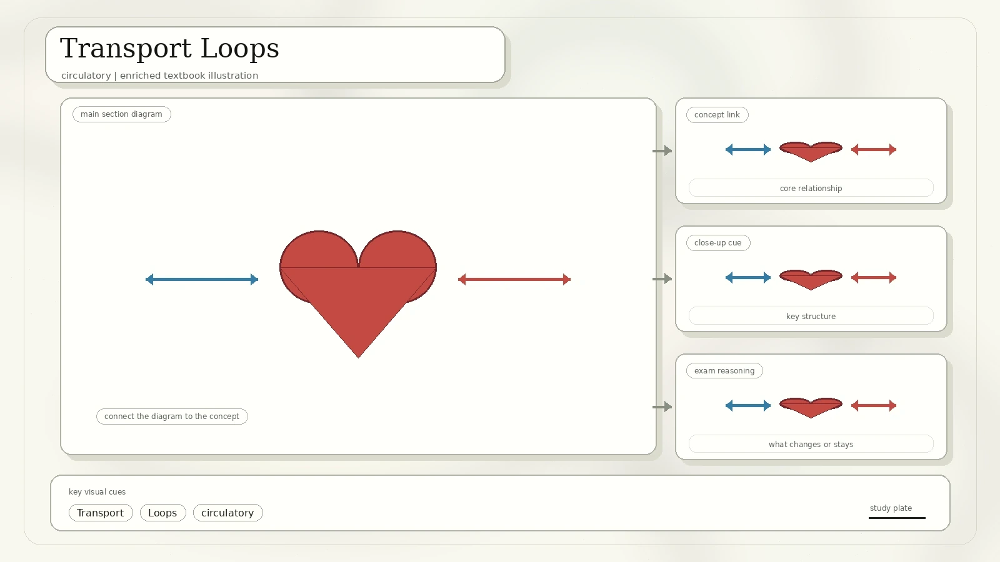
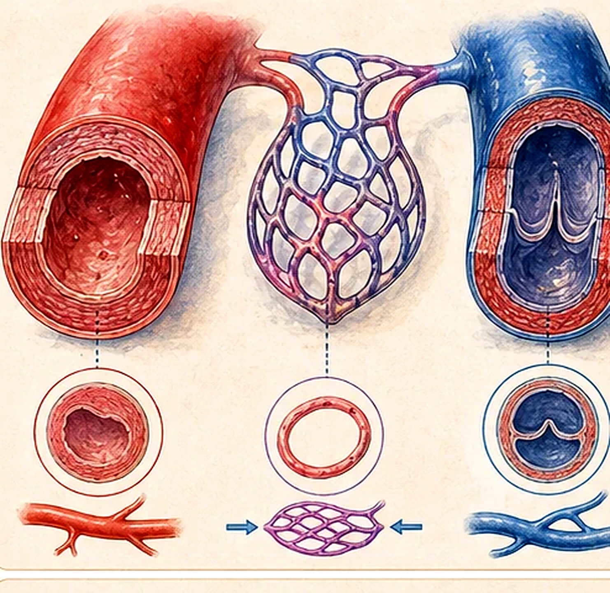
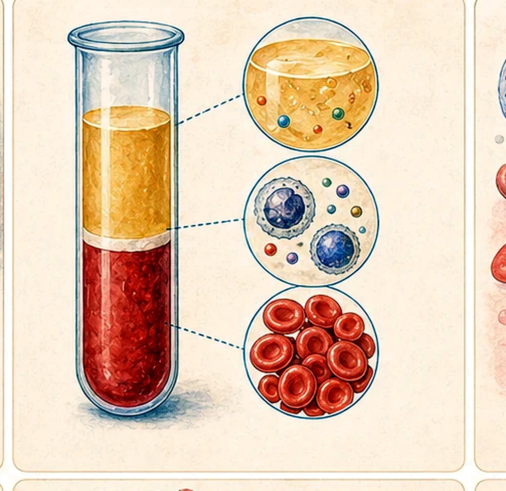
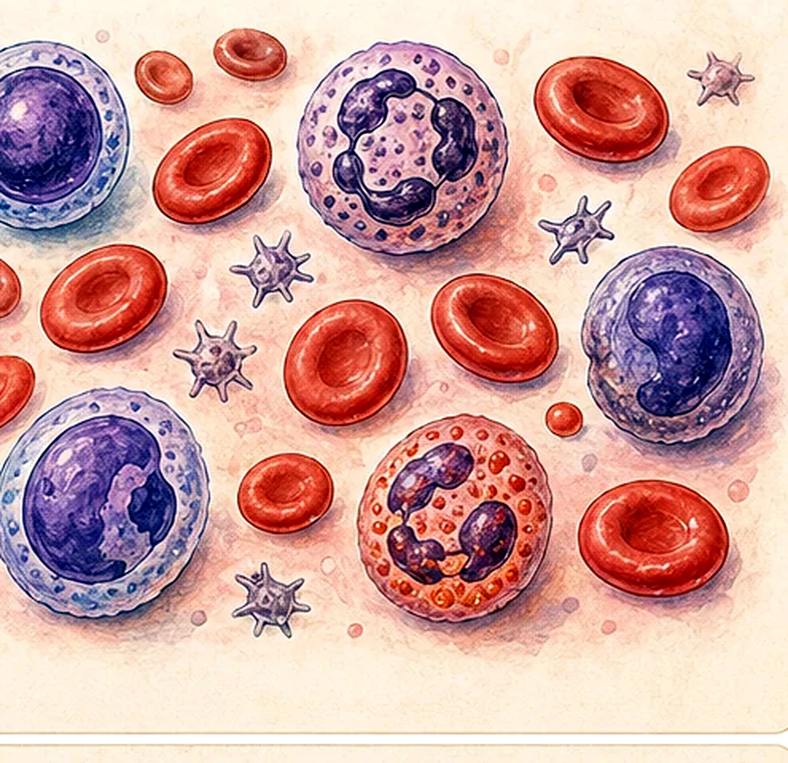
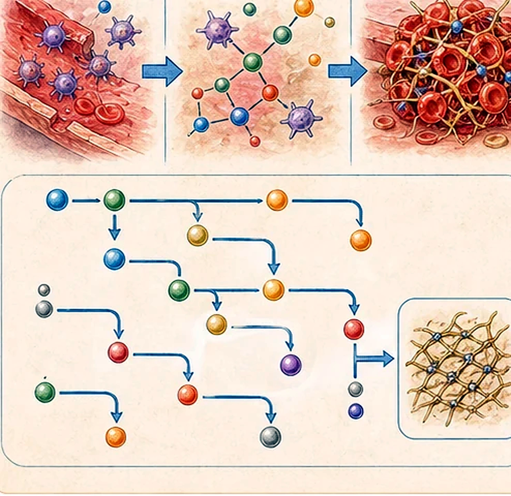
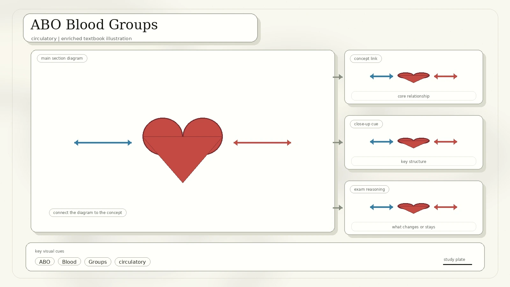
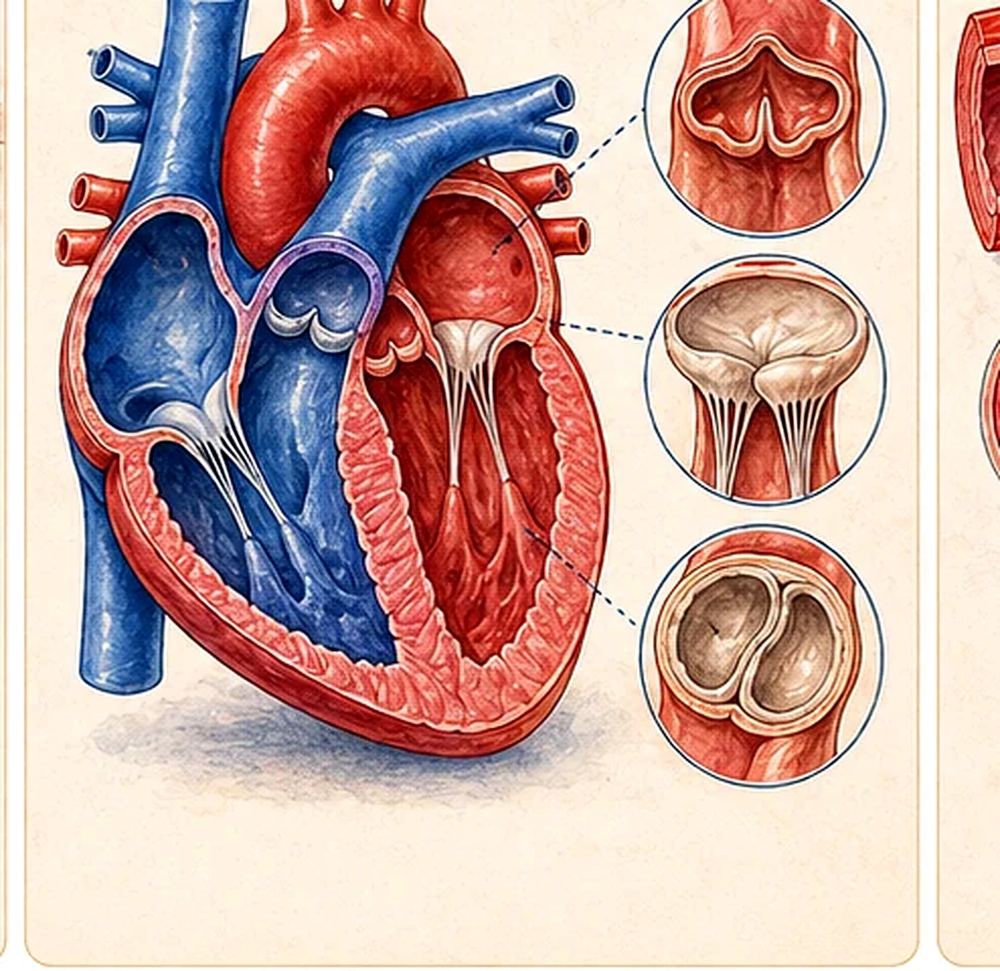
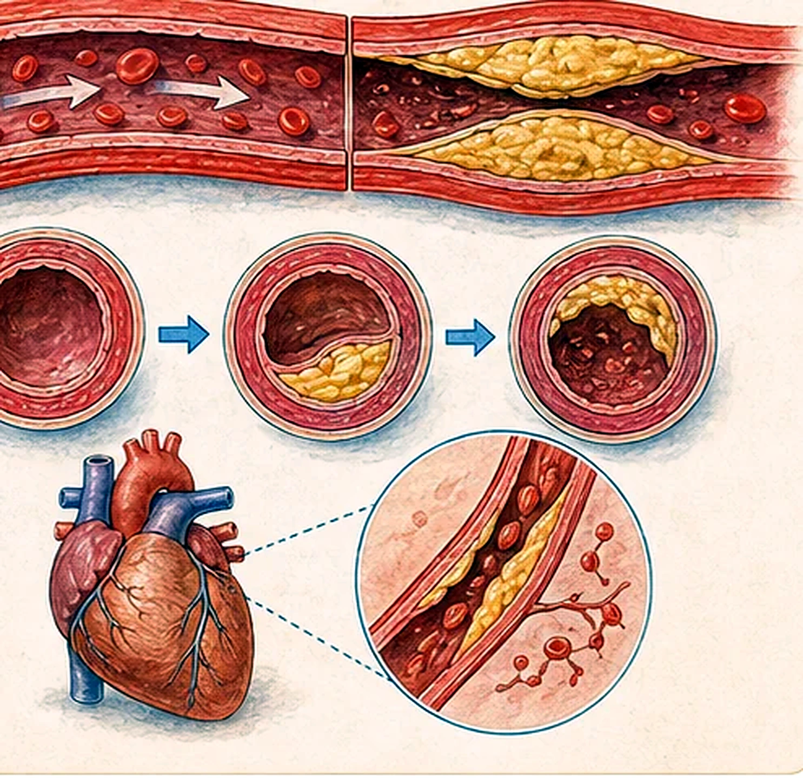

Transport Loops
The human circulatory system is a transport system that carries substances from one body part to another. The scan names three components: the heart, blood vessels, and blood.

A muscular pump that creates pressure and keeps blood moving.
Tubes that route blood away from the heart, through tissues, and back again.
A connective tissue carrying gases, nutrients, wastes, hormones, heat, and immune cells.
Oxygenated blood travels from the heart to body organs. Oxygen-poor blood then returns to the heart.
Deoxygenated blood travels from the heart to the lungs for gas exchange. Oxygen-rich blood returns to the heart.
Why double circulation matters: the right side sends blood to the lungs at lower pressure, while the left side sends blood to the whole body at higher pressure. This keeps gas exchange delicate in the lungs and delivery strong in the body.
Blood Vessels And Main Routes
The source compares arteries, capillaries, and veins, then names major human vessels such as the pulmonary artery, pulmonary vein, aorta, vena cava, hepatic vessels, renal vessels, iliac vessels, and hepatic portal vein.
| Vessel | Direction | Structure And Function |
|---|---|---|
| Arteries | Away from the heart | Carry blood from the heart to organs. Arteries branch into arterioles and then capillaries. |
| Capillaries | Between arterioles and venules | Microscopic exchange vessels. They form capillary beds in most tissues. |
| Veins | Back to the heart | Return blood to the heart. Small venules converge into larger veins. |

The aorta carries oxygen-rich blood from the heart. It branches to coronary arteries, head and arms, abdominal organs, kidneys, and legs.
The pulmonary artery carries oxygen-poor blood to the lungs. The pulmonary vein carries oxygen-rich blood from lungs to heart.
The hepatic portal vein carries blood from the alimentary canal to the liver. Blood leaves the liver through hepatic veins.
| Named Vessel | Main Job From The Scan |
|---|---|
| Carotid artery | Part of the anterior arterial supply toward the head. |
| Anterior vena cava | Returns blood from the head and arms to the heart. |
| Posterior vena cava | Collects blood from posterior body parts and returns it to the heart. |
| Hepatic artery and hepatic vein | Hepatic artery supplies the liver; hepatic vein returns blood from the liver to the heart. |
| Renal artery and renal vein | Renal artery supplies kidneys; renal vein returns blood from kidneys to heart. |
| Iliac artery and iliac vein | Carry blood to and from the lower body and legs. |
Blood And Plasma
Blood is a connective tissue made of about 45% cells suspended in about 55% plasma. The thin buffy coat contains leukocytes and platelets and is less than 1% of total blood volume.

What plasma carries
- Water, making plasma a clear yellowish liquid.
- Soluble proteins such as albumin, fibrinogen, prothrombin, and antibodies.
- Mineral salts, including hydrogencarbonates, chlorides, sulfates, and phosphates of calcium, sodium, and potassium.
- Food substances such as glucose, amino acids, fats, and vitamins.
- Excretory products such as urea, uric acid, and creatinine.
- Hormones such as insulin.
Plasma is expensive because it is useful: it contains clotting factors, antibodies, and transport proteins that can be separated for medical treatments. The scan links to a video asking why blood plasma is costly; this is the scientific reason behind that question.
Blood Cells
The scan separates red blood cells, white blood cells, and platelets. Each structure is adapted to a different job: oxygen transport, defence, and clotting.
Erythrocytes are flattened, biconcave, flexible cells with no nucleus or organelles at maturity. There are about 5 million RBC per cm3.
Leukocytes fight infection. Phagocytes engulf bacteria; lymphocytes make antibodies against pathogens.
Thrombocytes are small cell fragments with no nuclei. They help form blood clots at injury sites.

Why red blood cells lack a nucleus: the extra space allows more haemoglobin, the iron-containing protein that binds oxygen reversibly. Their biconcave shape increases surface area to volume ratio for faster oxygen diffusion.
Blood Clotting
The clotting process begins at an injury site when blood vessels are damaged. Platelets are activated, and damaged tissue plus activated platelets release thrombokinase.
Broken vessel tissue exposes signals that activate platelets and clotting factors.
Platelets stick together and release thrombokinase. Vasoconstriction helps reduce blood flow.
Thrombokinase converts prothrombin into thrombin in the presence of calcium and vitamin K.
Thrombin converts soluble fibrinogen into insoluble fibrin, forming strands that trap cells.

ABO Blood Groups
There are four ABO blood groups: A, B, AB, and O. This classification is based on certain proteins, called antigens, present on red blood cell surfaces. Plasma antibodies can recognize transfused blood as foreign or self.

If red blood cells are recognized as foreign, an immune response can cause agglutination: the red blood cells clump together and are marked for phagocytosis.
| Donor blood | Recipient A | Recipient B | Recipient AB | Recipient O |
|---|---|---|---|---|
| A | Accepted | Rejected | Accepted | Rejected |
| B | Rejected | Accepted | Accepted | Rejected |
| AB | Rejected | Rejected | Accepted | Rejected |
| O | Accepted | Accepted | Accepted | Accepted |
This table follows the simplified ABO red-cell transfusion table shown in the scan. Real transfusions also check Rh factor and cross-matching.
The Chambered Heart
The scan emphasizes that the heart is made of four chambers and that the human heart is more advanced than a fish heart because it allows complete separation of oxygenated and deoxygenated blood.

Appearance and chambers
- The heart is mainly cardiac muscle tissue.
- It is surrounded by a double-walled sac called the pericardium.
- The inner pericardial membrane connects to the outer layer of cardiac muscle.
- Pericardial fluid between the two layers reduces friction as the heart beats.
- The four chambers are the right atrium, left atrium, right ventricle, and left ventricle.
- Atria are upper chambers with relatively thin walls; they collect returning blood and pump it into ventricles.
- Ventricles have thick muscular walls; the left ventricle is thicker than the right because it pumps blood to the rest of the body.
The right atrium and right ventricle are separated by the tricuspid valve. The left atrium and left ventricle are separated by the bicuspid, or mitral, valve.
Semilunar valves are located at the start of the aorta and pulmonary arteries. They prevent backflow after blood leaves the ventricles.
Chordae tendineae: the scan names these cord-like tendons attaching the valve flaps to the ventricle walls. They stop atrioventricular valves from turning inside out during ventricular contraction.
Blood Supply To The Heart
The heart muscle itself needs oxygen and nutrients. Coronary arteries are found on the heart surface and supply blood to the heart muscles.
Coronary heart disease
- Coronary heart disease occurs when coronary arteries become blocked, occluded, or narrowed.
- Heart muscles can no longer receive sufficient oxygen and nutrients.
- A heart attack happens when blood supply to part of the heart muscle is completely cut off.
- The affected part can die, reducing the heart's ability to pump and possibly causing heart failure.
- Atherosclerosis is a cause of coronary heart disease: plaque deposition thickens and hardens the artery wall, narrowing the lumen.
